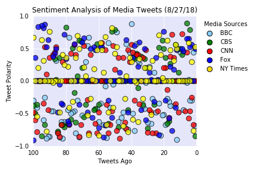
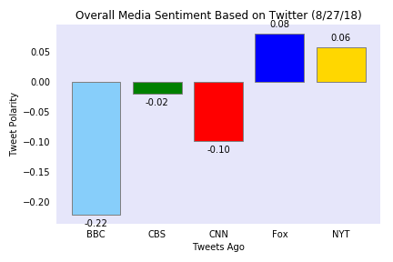

Twitter has become a wildly sprawling jungle of information—140 characters at a time. Somewhere between 350 million and 500 million tweets are estimated to be sent out per day. With such an explosion of data, on Twitter and elsewhere, it becomes more important than ever to tame it in some way, to concisely capture the essence of the data.
For this project, I created a Python script to perform sentiment analysis of the Twitter activity of various news outlets, and visualized the results using MatPlotLib. The news outlets that were analyzed are listed below:
The first plot is a scatter plot of sentiments of the last 100 tweets sent out by each news organization. The plot shows the average compound sentiment of each set of tweets. The plot points were relative to their respective time stamps:
The second plot is a bar plot visualizing the overall sentiments of the last 100 tweets from each news outlet:
